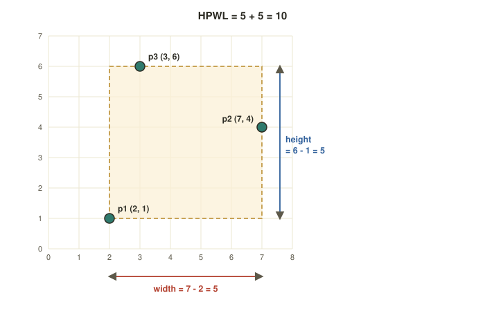
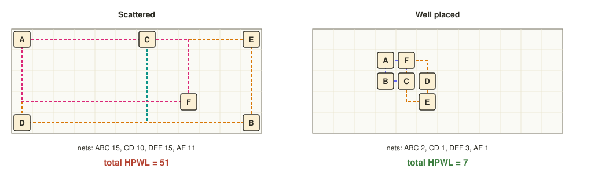

Chapter 4: Placement¶
The floorplan has fixed the die, the macros, the pins and the power grid, but the sea of standard cells is still floating with no physical home. Placement gives every cell an exact \((x, y)\) position in a row. It is a vast optimisation problem: hundreds of thousands or millions of cells, each with one legal place, and three goals that pull against one another. The cells must be close enough that wires are short, close enough on critical paths that timing is met, and yet spread out enough that the router can find room for every wire.
This chapter explains how placers measure wirelength before any wire exists, how they work in three phases from a smooth approximation to a legal and polished result, why congestion matters as much as length, and how the tool repairs timing against an ideal clock before the clock tree is built.
Learning outcomes
After this chapter you can:
- State the three objectives of placement and measure wirelength with HPWL.
- Describe global placement, legalisation and detailed placement, and say why they are separate.
- Explain congestion, and why the lowest wirelength is not always the best placement.
- Describe buffering, sizing and cloning, and say why setup is repaired before the clock tree and hold after it.
4.1 What placement is trying to do¶
After synthesis the design has hundreds of thousands of standard cells, and the floorplan is carved into rows of fixed height tiled with sites, the smallest legal step in the horizontal direction. Placement drops every cell onto a row and a site so that the design is routable, fast and uncongested. It balances three goals.
Short wires. Short nets mean less capacitance, less delay, less power and less to route. The universal proxy for length is HPWL, defined below.
Timing. Cells on a critical path should sit close together so that the nets joining them are short and fast. A placer that feeds timing information back into its choices is called timing-driven.
Avoiding crowding. If too many nets cross one region the router runs out of tracks. A congestion-driven placer spreads cells out so that local wiring demand stays below supply.
4.2 Measuring wirelength: HPWL¶
Real wires do not exist yet, so placers estimate them. Draw the smallest rectangle that encloses all the pins of a net, and take its width plus its height. That is the half-perimeter wirelength, HPWL:
and the total over all nets is the quantity the placer minimises:
HPWL is cheap to compute, and for nets of two or three pins it equals the length of the shortest possible right-angled route. For nets with more pins it is a lower bound, but it remains the standard measure.
Example 4.1: HPWL of one net
A net connects pins at \((2, 1)\), \((7, 4)\) and \((3, 6)\).
- The \(x\) values run from 2 to 7, so the width is \(7 - 2 = 5\).
- The \(y\) values run from 1 to 6, so the height is \(6 - 1 = 5\).
- HPWL \(= 5 + 5 = 10\) (Figure 4.1).

Example 4.2: Being the placer
Six cells A to F sit on a grid of sites, joined by four nets: A–B–C, C–D, D–E–F and A–F. In the course's interactive placer the cells start scattered and the learner moves them to shrink the dashed boxes. Figure 4.2 shows the two extreme states.
Scattered: A\((0,0)\), B\((11,4)\), C\((6,0)\), D\((0,4)\), E\((11,0)\), F\((8,3)\). The nets measure A–B–C: \(11 + 4 = 15\); C–D: \(6 + 4 = 10\); D–E–F: \(11 + 4 = 15\); A–F: \(8 + 3 = 11\). The total is \(51\).
Well placed: A\((3,1)\), B\((3,2)\), C\((4,2)\), D\((5,2)\), E\((5,3)\), F\((4,1)\). The nets measure A–B–C: \(1 + 1 = 2\); C–D: \(1 + 0 = 1\); D–E–F: \(1 + 2 = 3\); A–F: \(1 + 0 = 1\). The total is \(7\).
The same cells and the same nets: moving them changes the wirelength by a factor of seven.

4.3 Three phases: global, legalise, detailed¶
Modern placers split the work into three ordered phases, each tightening a constraint that the one before relaxed.
Global placement finds an approximate position for every cell, minimising total HPWL while spreading cells evenly. Cells may overlap and need not sit on legal sites; think of a smooth cloud of density. Analytic placers, such as OpenROAD's RePlAce, treat this as a non-linear optimisation, balancing a wirelength term against an electrostatic-style density penalty.
Legalisation removes every overlap and snaps each cell to a legal row and site, moving cells as little as possible so that the global solution is preserved. Cells may not straddle rows, overlap blockages or share a site. The course describes the legaliser in OpenROAD's dpl module as Abacus- or Tetris-style.
Detailed placement polishes the now-legal design locally: swapping neighbours, sliding cells along a row, mirroring them and filling gaps, to squeeze out the last of the wirelength and to fix small timing and pin-access problems, without creating overlaps again.
Think about it
Why not snap cells to sites from the very start?
Answer
Forcing cells onto discrete sites at every step turns a smooth, differentiable optimisation into a brutal combinatorial one. Global placement stays in continuous space so that mathematical optimisers can move millions of cells at once; discretisation is left to legalisation, where the moves are already small.
4.4 Short is not enough: congestion¶
A placement can have beautiful wirelength and still be impossible to route, because too many nets want to cross the same region. Placers therefore reason about the supply and demand of routing tracks.
- Density maps. The core is diced into a grid of tiles, called g-cells (global-routing cells), and the placer tracks how full each bin is. A local density above the target, for instance over 100 % of the available sites, cannot be legalised and warns of coming congestion.
- Congestion maps. A fast trial route estimates, for every tile edge, the routing demand divided by the number of tracks available. Hot spots, where demand exceeds supply (overflow above 1.0), are red flags long before the real wires are drawn.
- Placement blockages keep channels open around macros, reserve space for buffers or steer cells away from congestion.
- Target density. Deliberately leaving the core 60 to 70 % full gives the router and the clock-tree builder room to insert wires and buffers. Packing to 90 % or more is a classic recipe for failing to route.
Timing-driven placement feeds net weights or slack back from a timing engine, so that critical nets are pulled tighter, while congestion-driven placement inflates cells or spreads density in hot regions. The two aims fight, and a good placer balances them.
Common misconception
"The lowest wirelength is the best placement." Not necessarily. A placement that is optimal for wirelength often packs connected cells into a dense knot that the router cannot escape. Real placers accept a few per cent more wirelength for a much flatter congestion map: a slightly longer, routable design always beats a shorter, unroutable one.
4.5 Fixing timing before the clock is real¶
During placement the clock is assumed to be ideal: it reaches every flip-flop at the same instant with no delay. This is a fiction, since clock-tree synthesis builds the real network in the next chapter, but it is good enough to repair the data paths first, before the clock network muddies the picture. This pre-CTS optimisation (OpenROAD's resizer) repairs setup violations and design-rule problems with three moves.
Buffering. A long, heavily loaded or high-fan-out net is broken up with buffers that re-drive the signal. This cuts delay and fixes maximum-transition and maximum-capacitance violations.
Gate sizing. A weak cell is swapped for a stronger drive-strength variant, or the reverse, to trade speed against area and power until the slack target is met.
Cloning. A gate that drives too many loads is duplicated so that each copy drives a subset, splitting the fan-out and shortening the paths from the critical branch.
# OpenROAD: a typical pre-CTS (ideal-clock) resizing pass
estimate_parasitics -placement ;# wire RC estimated from the placement
set_dont_use $dont_use_cells
buffer_ports
repair_design -max_wire_length 600 ;# buffers for long nets; fix slew and capacitance limits
repair_timing -setup ;# size gates and add buffers for setup
# hold is deliberately left until AFTER clock-tree synthesis
Think about it
Why fix setup now but leave hold for after the clock tree?
Answer
Setup depends on the data path being fast enough, which can be judged with an ideal clock. Hold depends on the real clock arrival at each flip-flop, and that arrival does not exist until the clock tree is built. Fixing hold against an ideal clock would waste buffers that would have to be redone.
Summary¶
- Placement gives every cell an \((x, y)\) in the rows, balancing short wires (HPWL), timing and freedom from congestion.
- HPWL is the width plus the height of the box around a net's pins; the total over all nets is the standard estimate of wirelength.
- The phases are global (approximate, overlaps allowed), legalisation (snap to rows and sites) and detailed (local polish).
- Density maps, trial-route congestion maps and blockages keep the design routable; wirelength alone is not the goal.
- Before the clock tree, buffering, sizing and cloning fix setup against an ideal clock; hold waits until after it.
Exercises¶
Exercise 4.1: HPWL of a net
A net connects pins at \((2, 1)\), \((7, 4)\) and \((3, 6)\). What is its HPWL? Now move the pin at \((7, 4)\) to \((4, 4)\). What is the HPWL?
Answer
\((7 - 2) + (6 - 1) = 10\). After the move the \(x\) values are 2, 4, 3, so the width is \(4 - 2 = 2\) and the height is still \(6 - 1 = 5\): HPWL \(= 7\).
Exercise 4.2: Two nets
Net N1 has pins at \((1, 1)\), \((4, 3)\) and \((2, 6)\); net N2 has pins at \((5, 5)\) and \((9, 2)\). Find the HPWL of each and the total.
Answer
N1: \((4 - 1) + (6 - 1) = 3 + 5 = 8\). N2: \((9 - 5) + (5 - 2) = 4 + 3 = 7\). Total \(= 15\).
Exercise 4.3: A different good placement
In the well-placed layout of Example 4.2, move F from \((4, 1)\) to \((5, 1)\), leaving the other cells where they are. Compute the new total HPWL and say whether placement can do better than 7 on this problem.
Answer
A–B–C is unchanged at 2 and C–D at 1. D–E–F has D\((5,2)\), E\((5,3)\), F\((5,1)\): width 0, height \(3 - 1 = 2\), so 2. A–F has A\((3,1)\) and F\((5,1)\): width 2, height 0, so 2. The total is \(2 + 1 + 2 + 2 = 7\), the same as before.
Can 7 be beaten? Three distinct sites need an HPWL of at least 2, and two distinct sites at least 1, so the four nets cannot total less than \(2 + 1 + 2 + 1 = 6\). That bound can be reached: put A\((0,0)\), B\((0,1)\), C\((0,2)\), D\((1,2)\), E\((1,1)\), F\((1,0)\). Then A–B–C \(= 2\), C–D \(= 1\), D–E–F \(= 2\), A–F \(= 1\), a total of 6. Since 6 is also the lower bound, it is the minimum. The course's placer treats 7 as the score to match, and 6 as the prize for a careful search.
Exercise 4.4: Knotted or spread?
A placement has the lowest total HPWL the tool has ever found, but the congestion map shows several tiles with overflow above 1.0. Is it a good placement? What would a placer do about it?
Answer
Not yet: routing will fail or take large detours in those tiles. The placer should spread cells in the hot regions, add blockages or lower the density target, accepting a little more wirelength for a flatter congestion map.
Exercise 4.5: Which repair first?
A net with fan-out of 40 is the start of the critical path. Name the three pre-CTS repairs and say which you would try first.
Answer
Buffering, gate sizing and cloning. Fan-out is the problem, so buffering the net (or cloning the driver so that each copy drives a share of the 40 loads) is the natural first move; up-sizing the driver also helps but makes the driver's own input heavier for the gate before it.